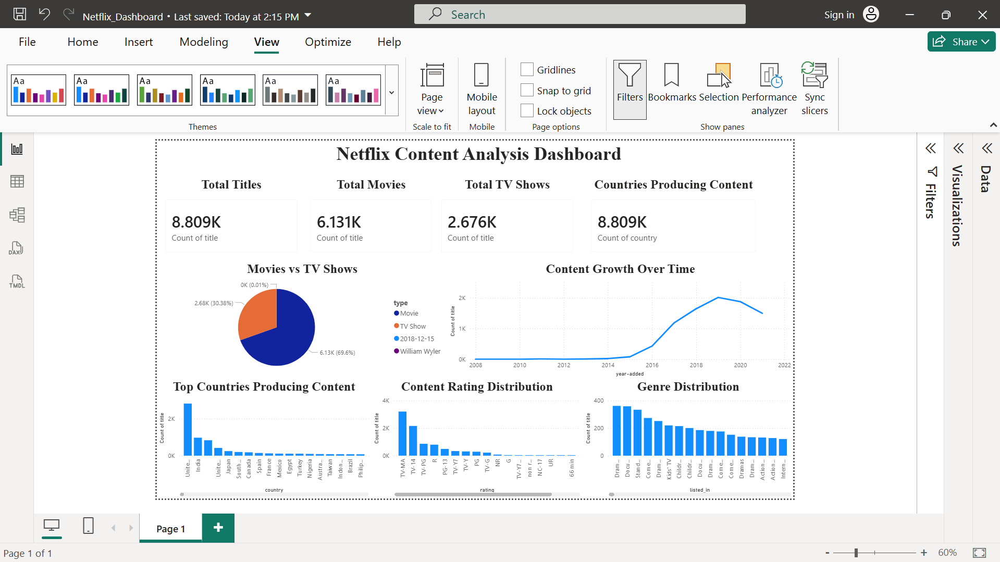
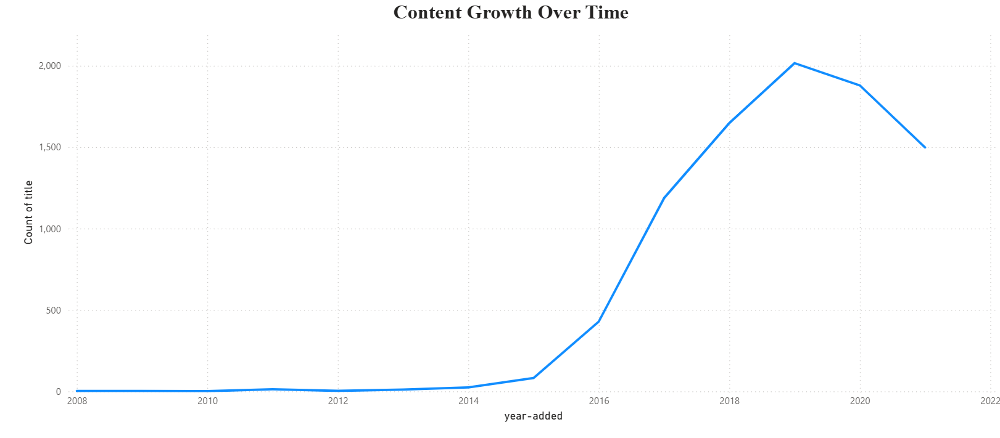
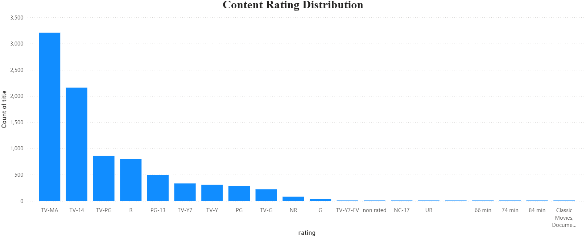
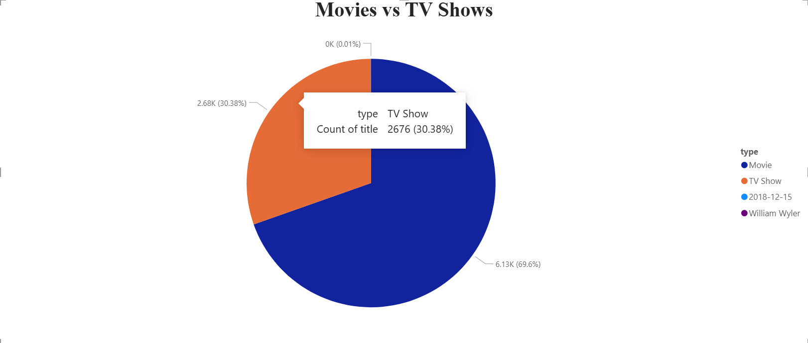
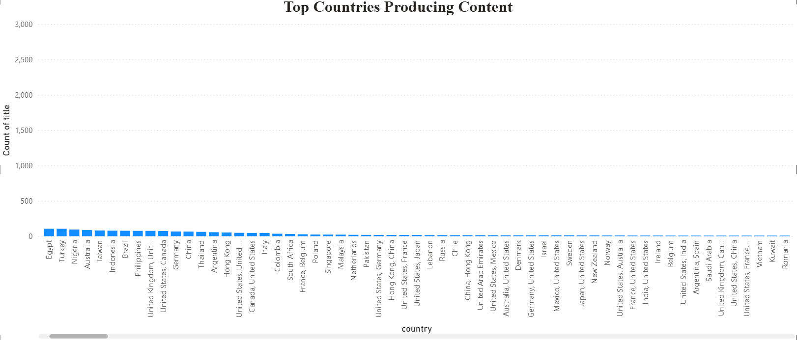
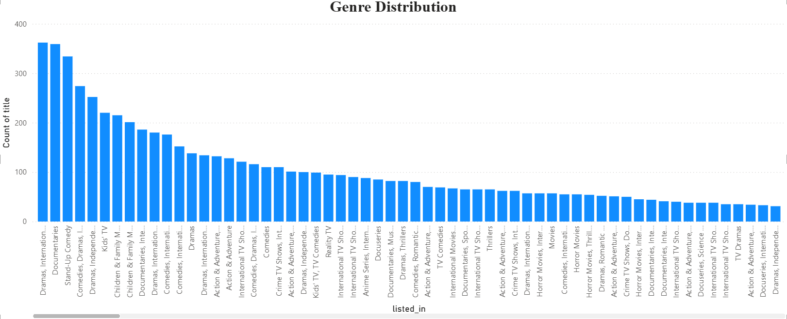

What I Did
From raw catalog data to a dashboard people can explore
01
Prepared the Netflix dataset
I cleaned and organized the data so titles, countries, years, genres, and ratings could be analyzed more consistently.
02
Performed exploratory data analysis
I used Python and Pandas to study the structure of the catalog and detect patterns in title type, content growth, and content distribution.
03
Created chart-based insights
Using Matplotlib, I visualized genre frequency, rating distribution, country contribution, and the growth of Netflix content over time.
04
Built the Power BI dashboard
I brought the analysis together in an interactive Power BI report so users can filter and understand the content library quickly.
Questions Explored
What this project helps answer
- How are movies and TV shows distributed in the Netflix catalog?
- How has the content library grown over time?
- Which countries contribute the most titles?
- Which ratings appear most often across the catalog?
- What genres dominate Netflix content?
Key Insights
What stood out in the data
Movies dominate the platform
The movie share is noticeably larger than the TV show share, making films the bigger part of Netflix's catalog.
Growth accelerates after 2016
The content growth line shows a sharp increase from around 2016 onward, followed by very high title counts in later years.
The United States leads content production
Country comparison highlights the United States as the strongest contributor of Netflix titles.
Drama and international genres appear frequently
The genre chart suggests drama-led and internationally oriented categories are among the most common in the catalog.
Dashboard Preview
An interactive summary of the whole content story
The final Power BI dashboard combines KPIs, type split, time-based growth, top countries, content ratings, and genre distribution into one clear analysis interface.

Visual Highlights
Key charts from the project





Project Files
The actual assets behind the analysis
Source
Raw Netflix CSV
Analysis
Notebook + Cleaned Data
Presentation
Power BI Dashboard
Skills I Learned
What this project strengthened
Data Cleaning
I improved my ability to prepare a large entertainment dataset for consistent exploration and reporting.
Exploratory Analysis
I practiced breaking down a catalog by type, year, country, genre, and rating to surface useful patterns.
Visualization Thinking
I learned how to match charts with business questions so the analysis becomes easier to understand at a glance.
Dashboard Storytelling
I strengthened how I turn chart findings into an interactive Power BI dashboard that supports exploration.
Business Interpretation
I became more confident linking content patterns to platform growth, catalog composition, and global contribution.
Project Presentation
I practiced presenting a full data workflow from raw CSV to cleaned analysis to dashboard-based insights.
Tools Used
Core stack behind the project
Python
Pandas
Matplotlib
Microsoft Power BI
Project Summary
This project shows my ability to clean streaming content data, analyze how the catalog behaves across time and geography, and present the findings through a polished dashboard and chart-based case study.
I used data analysis not just to count titles, but to explain how Netflix's catalog changes across type, region, rating, and genre.